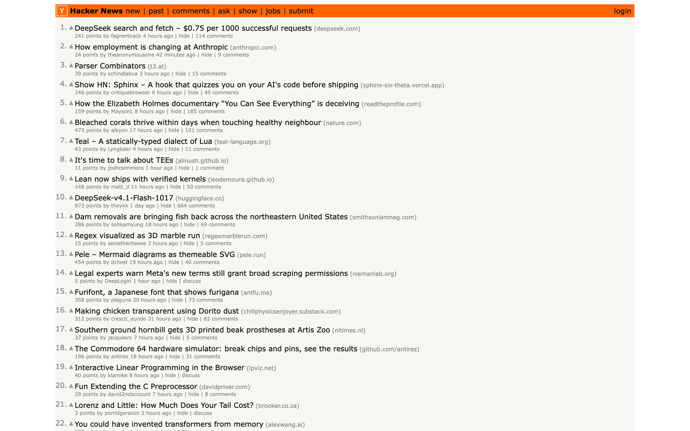
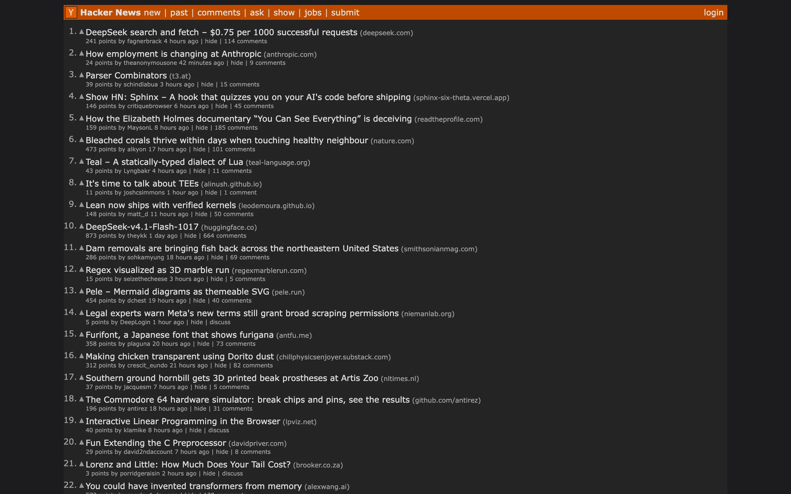
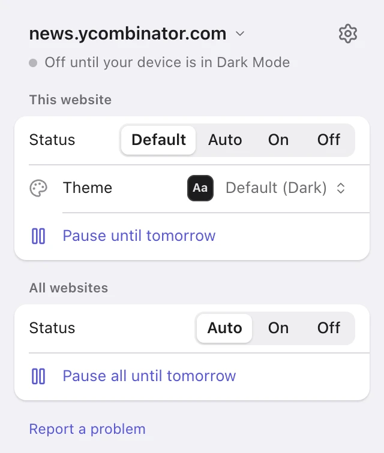

Dark mode for websites that don’t have one.
Nyx is a free Safari extension for iPhone, iPad and Mac. It reads the colors each page uses and picks darker ones, so a site still looks like itself.


Hacker News in the Dark theme. The orange header stays orange, just darker.
It keeps each site recognizable.
Inverting a page turns photos into negatives and orange buttons blue. Nyx reads the page’s stylesheets instead and picks a new color for each one, depending on whether it paints a background, text, a border or a shadow.
Colors keep their hue
A blue link becomes a lighter blue. A red header stays red, just darker.
Layers stay apart
Menus, cards and code blocks keep a shade of difference from the page behind them.
Text stays readable
Any text that ends up too faint is lifted to at least 4.5:1 contrast, the WCAG level for body text.
26 themes. Or your own.
From plain Dark and Black to Sepia, Dracula and Solarized. Make your own from a background color, a text color, image brightness and grayscale, and share it as a link.
Essentials
- Dark
- Black
- Gray
- Sepia
- Dimmed
- High Contrast
- Grayscale
Colors
- Green
- Yellow
- Orange
- Red
- Purple
- Blue
From code editors
- Dracula
- Nord
- One Dark
- Solarized
- Gruvbox
- Catppuccin Mocha
- Tokyo Night
Moody
- Deep Sea
- Forest
- Ember
- Candlelight
- Midnight
- Terminal
One small menu for each site.
Click the Nyx button in Safari’s toolbar to change how the site in front of you looks.
- Set it to Auto, On or Off, or give it its own theme.
- Pause it until tomorrow when a page looks wrong.
- Apply a setting to a whole domain, one subdomain or a single page.
- Sites with their own dark mode are left alone, unless you say otherwise.

Works where you read.
iPhone, iPad and Mac
Auto follows your device’s Dark Mode, or a schedule you set (8 PM to 7 AM by default).
Synced through iCloud
Change a setting on your Mac and your iPhone has it too. It syncs through your own iCloud account.
Shortcuts and Control Center
Switch it with a Shortcut, a Focus Filter, a Control Center control, or a keyboard shortcut on Mac.
Chrome, Edge and Firefox
The same extension, the same themes. Settings sync through your browser’s own sync.
Nyx collects no data.
No accounts, no analytics, no ads. The only requests Nyx makes are for stylesheets and images the page already loads, so it can read their colors. The code is on GitHub if you want to check.
Get Nyx.
Nyx is free and open source. The App Store and Chrome Web Store versions are on their way; until then, install it from GitHub.
Safari on iPhone, iPad and Mac
- Build the app with Xcode from the Safari instructions.
- Run it on your Mac, iPhone or iPad.
- Turn on Nyx in Safari’s extension settings. Support shows where.
Chrome, Edge and Firefox
- Download
nyx-chromeornyx-firefoxfrom the latest release. - Chrome or Edge: unzip it, open
chrome://extensions, turn on Developer mode and choose “Load unpacked”. - Firefox: open
about:debuggingand choose “Load Temporary Add-on”.